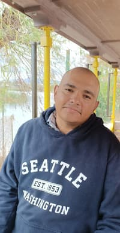

Edwin Rene Rodriguez Ortiz | WDD 130
Hi! My name is Edwin Rene Rodriguez Ortiz, and I am from Queretaro México, I like learning web development and I hope I can make a lot of good friends on this course. I enjoy watching movies and the nature, I'm also married to a beautiful woman, we have three kids, my eldest is a girl, she is twelve years old, the one in the middle is a boy, he's ten and my youngest is also a girl but she's is seven, next December she'll turn eight. I'm currently working at a call center but I'm hoping that by the beginning of the next year I'll be working in web development or something related to programming.
During my formative years we lived indifferent parts of México, and albeit being difficult to adapt every once in a while to a new environment, now that I think of it, I think it help me to learn to adapt to the changes, since I had to accept them and live with them, I made some good friend when I was a teenager and although I lost contact with most of them, their memories remain with me and I treasure those moments when I come back to them. I hope I can become a good programmer, I know I'm still not to good at it but I know if I keep my faith in our Savior Jesus Christ and If I continue making my part, I'll succeed in it.